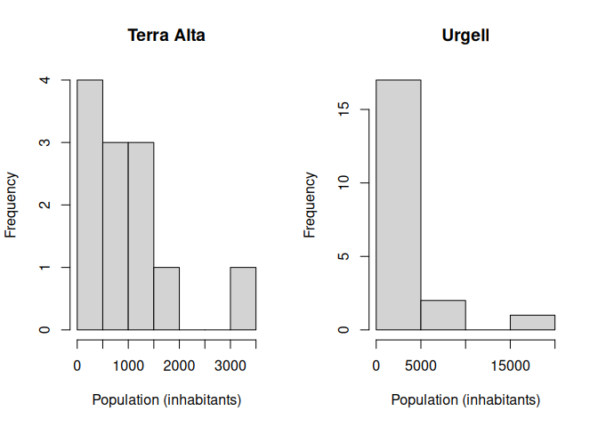
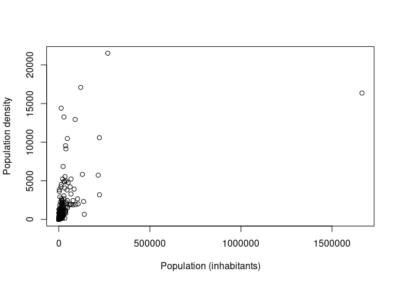
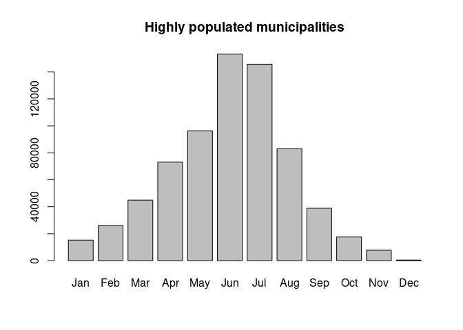

The learning objectives for this practical are:
To do this practical you need an installation of R and RStudio. You can find the instructions in the setup link on how to install R and RStudio in your system. For a smooth development of this practical, it is strongly recommended that you follow and finish the previous practical 7.
We will download COVID19 vaccination and demographic data for Catalonia to illustrate some data wrangling in R and RStudio. Please follow the next two steps:
COVID19 vaccination by municipality:
$ unzip Vacunaci__per_al_COVID-19__dosis_administrades_per_municipi.zippractical8 and copy in it
the downloaded file.dosis_municipi.csv, so that you finally have a
file called dosis_municipi.csv in the directory
practical8.Population by municipality:
practical8 directory
and change its name to
poblacio_municipis.csv.Let’s load the CSV file poblacio_municipis.csv, which
contains some demographic indicators for the 948 municipalities in
Catalonia such as the population (column
Poblacio_padro).
> pop <- read.csv("poblacio_municipis.csv")
> dim(pop)
[1] 11376 69
> head(pop, n=3)
Any Codi_ine_5_txt Codi_ine_6_txt NomMun Comarca AFT Costa
1 2012 8025 80253 el Bruc Anoia PE 0
2 2012 8026 80266 el Brull Osona CC 0
3 2012 8027 80272 les Cabanyes Alt Penedès PE 0
Muntanya Poblacio_padro Superficie_ha X05_SU X05_perce_SU X05_SUC
1 2029 4733.5830 140.6794 2.9719 138.1059
2 Zona de muntanya 261 4153.0043 28.5859 0.6883 28.1810
3 947 115.5193 23.8846 20.6759 23.3431
X05_perce_SUC X05_SNC X05_perce_SNC X05_SURB X05_perce_SUR X05_SUD
1 2.9176 2.5736 0.0544 6.6230 0.1399 6.6230
2 0.6786 0.4049 0.0097 25.1602 0.6058 25.1602
3 20.2071 0.5416 0.4688 18.5540 16.0614 18.5540
X05_perce_SUD X05_SND X05_perce_SND X05_SNU X05_perce_SNU X06_Class_no_SNU
1 0.1399 0 0 4586.2805 96.8881 147.3025
2 0.6058 0 0 4099.2582 98.7059 53.7461
3 16.0614 0 0 73.0806 63.2627 42.4387
X06_perce_Class_no_snu X07_densitat_pob_km2 X08_densitat_pob_urba_Km2
1 3.1119 42.9872 1442.2863
2 1.2941 6.3583 913.0373
3 36.7373 822.1686 3964.8912
X09_Perce_SNC_SU X10_Perce_SUD_SU X11_Perce_SND_SU X012_Qual_SUC_AE
1 1.8294 4.7079 0 11.7035
2 1.4164 88.0161 0 0.0000
3 2.2674 77.6819 0 0.0000
X12_A1_SUC X12_A2_SUC X12_A3_SUC X13_Qual_SUC_R X13_R1_SUC X13_R2_SUC
1 11.7035 0 0 85.9369 0.9245 0.0000
2 0.0000 0 0 20.3507 0.0000 0.0000
3 0.0000 0 0 13.8351 5.0349 5.0386
X13_R3_SUC X13_R4_SUC X13_R5_SUC X13_R6_SUC X14_Qual_SUC_Altres X14_M1_SUC
1 0 0 8.2275 76.7850 2.7536 0
2 0 0 0.0000 20.3507 0.1780 0
3 0 0 0.0000 3.7615 1.1516 0
X14_M2_SUC X14_M3_SUC X15_Qual_SUC_SISTEMES X15_SA_SUC X15_SC_SUC X15_SD_SUC
1 2.7536 0 37.7864 0 0 0
2 0.1780 0 7.6725 0 0 0
3 1.1516 0 8.3682 0 0 0
X15_SE_SUC X15_SF_SUC X15_SH_SUC X15_SP_SUC X15_SS_SUC X15_ST_SUC X15_SV_SUC
1 2.5910 0 0 0 3.6376 0.0000 11.0487
2 2.0338 0 0 0 0.0000 0.7045 2.4458
3 0.6412 0 0 0 0.0000 0.0192 2.0692
X15_SX0_SUC X15_SX1_SUC X15_SX2_SUC X16_QUAL_snu X16_N1_SNU X16_N2_SNU
1 0.0548 9.4575 10.9968 4422.1847 2004.9363 2406.4240
2 0.0000 1.1271 1.3614 4028.5438 547.4568 739.7637
3 0.0000 3.2580 2.3806 64.2643 27.6080 36.6563
X16_N3_SNU X16_N4_SNU X17_Sol_resid_habt X18_Sol_AE_habt X19_Zverdes_habt
1 0.000 10.8243 423.5432 57.6813 54.4542
2 2741.323 0.0000 779.7221 0.0000 93.7075
3 0.000 0.0000 146.0939 0.0000 21.8498
X20_Equip_habt
1 12.7696
2 77.9217
3 6.7704
> table(pop$Any)
2012 2013 2014 2015 2016 2017 2018 2019 2020 2021 2022 2023
948 948 948 948 948 948 948 948 948 948 948 948 We can observe that this dataset contains data from different years.
To continue with our analysis, we will select the most recent data
corresponding to 2023 and, moreover, we will only keep the columns
Codi_ine_5_txt (identifier for the municipality),
NomMun, Comarca, Poblacio_padro
and Superficie_ha, corresponding to town identifier, town
name, county, population, town surface in hectare (ha),
respectively.
> ## build a logical mask to select for year 2023
> mask <- pop$Any == 2023
> ## build a character string vector of the selected columns
> selcols <- c("Codi_ine_5_txt", "NomMun", "Comarca", "Poblacio_padro", "Superficie_ha")
> ## subset the data.frame object 'pop' for rows in 'mask' and columns in 'selcols'
> pop_sel <- pop[mask, selcols]
> dim(pop_sel)
[1] 948 5
> head(pop_sel)
Codi_ine_5_txt NomMun Comarca Poblacio_padro
10429 8001 Abrera Baix Llobregat 12848
10430 8002 Aguilar de Segarra Bages 294
10431 8003 Alella Maresme 10139
10432 8004 Alpens Lluçanès 273
10433 8005 l'Ametlla del Vallès Vallès Oriental 9296
10434 8006 Arenys de Mar Maresme 16342
Superficie_ha
10429 1997.8648
10430 4321.9825
10431 961.9331
10432 1377.8822
10433 1436.2999
10434 649.1550Lists allow one to group values through their elements. Let’s say we
want to group the population number by county. We can do that using the
function split() to which we should give a first argument
of the values we want to group and a second argument with the grouping
factor.
> pbyc <- split(pop_sel$Poblacio_padro, pop_sel$Comarca)
> class(pbyc)
[1] "list"
> length(pbyc)
[1] 43
> names(pbyc)
[1] "Alt Camp" "Alt Empordà" "Alt Penedès"
[4] "Alt Urgell" "Alta Ribagorça" "Anoia"
[7] "Bages" "Baix Camp" "Baix Ebre"
[10] "Baix Empordà" "Baix Llobregat" "Baix Penedès"
[13] "Barcelonès" "Berguedà" "Cerdanya"
[16] "Conca de Barberà" "Garraf" "Garrigues"
[19] "Garrotxa" "Gironès" "Lluçanès"
[22] "Maresme" "Moianès" "Montsià"
[25] "Noguera" "Osona" "Pallars Jussà"
[28] "Pallars Sobirà" "Pla d'Urgell" "Pla de l'Estany"
[31] "Priorat" "Ribera d'Ebre" "Ripollès"
[34] "Segarra" "Segrià" "Selva"
[37] "Solsonès" "Tarragonès" "Terra Alta"
[40] "Urgell" "Val d'Aran" "Vallès Occidental"
[43] "Vallès Oriental"
> head(pbyc)
$`Alt Camp`
[1] 974 5278 508 693 1282 337 198 296 181 435 183 544
[13] 2395 490 1215 584 572 526 385 1942 25014 723 1362
$`Alt Empordà`
[1] 923 171 612 1061 1681 98 1059 797 262 941 276 2912
[13] 325 668 11731 298 186 479 546 10478 409 47879 786 463
[25] 972 3387 849 4839 1216 299 750 215 1465 393 128 1495
[37] 555 182 2018 557 281 1066 1045 203 234 20140 679 275
[49] 833 173 2122 382 872 221 346 768 903 995 488 5642
[61] 167 1153 379 1188 198 413 785 240
$`Alt Penedès`
[1] 1732 998 2572 1674 1456 7953 2218 2628 3968 2110 909 1317
[13] 523 571 1026 2572 3380 2462 2407 12945 362 7650 3243 1499
[25] 2608 1141 40714
$`Alt Urgell`
[1] 322 163 77 221 99 44 568 133 1093 1864 797 345
[13] 938 12568 792 270 255 181 125
$`Alta Ribagorça`
[1] 1090 2371 505
$Anoia
[1] 222 72 2268 1665 3566 188 5417 783 162 651 340 41164
[13] 828 952 9839 198 3720 163 17203 3188 2309 558 219 254
[25] 162 1268 359 10456 138 4018 1428 179 12758Grouping values can be useful in data analysis when we want to
examine the data separately by groups. Let’s say we want to visualize
the distribution of the population for the two counties
Terra Alta and Urgell, next to each other
using a histogram.
We can use the function hist() for that purpose, creating a
grid of two plotting panes using the par() function, as
follows:
> par(mfrow=c(1, 2))
> hist(pbyc[["Terra Alta"]], xlab="Population (inhabitants)", main="Terra Alta")
> hist(pbyc$Urgell, xlab="Population (inhabitants)", main="Urgell")
Note that in the previous code we are using the double-bracket
operator [[ instead of the dollar $ to access
the element Terra Alta because this element has an space
character in its name.
Exercise: Try to interpret the previous plots, how many municipalities in Urgell and Terra Alta have less than 5,000 inhabitants?
Now, let’s calculate the mean municipality population for the county
of Terra Alta. Having built the previous list object, we can
make that calculation applying the function mean() to the
corresponding element of the list:
> mean(pbyc[["Terra Alta"]])
[1] 956Now, let’s compare it with the mean municipality population for Urgell:
> mean(pbyc$Urgell)
[1] 1900.65It would be tedious to do that calculation for each different county
by writing one such function call for each element of the list. As an
alternative, we could use a while or for loop
that would iterate over the elements of the list. However, R provides a
more compact way to iterating over lists, and other objects, by using
functions for implicit looping
such as lapply() or sapply(). These functions
take a list as a first argument, iterate through each element of that
list, and at each iteration apply the function given in the second
argument. Additional arguments can be given and will be passed to the
applied function.
The function lapply() returns again the input list with
its elements replaced by the result given by the function on each
corresponding element, while the function sapply() attempts
to simplify the resulting data structure in that if each element of the
resulting list has length 1, then it return an atomic vector.
We can calculate the mean municipality population per county with the
following call to the sapply() function:
> sapply(pbyc, mean)
Alt Camp Alt Empordà Alt Penedès Alt Urgell
2005.0870 2155.1765 4171.7778 1097.6316
Alta Ribagorça Anoia Bages Baix Camp
1322.0000 3839.2424 6313.4828 7191.4643
Baix Ebre Baix Empordà Baix Llobregat Baix Penedès
5783.8571 3931.1389 28057.7000 8271.5714
Barcelonès Berguedà Cerdanya Conca de Barberà
463664.2000 1308.9355 1167.5294 928.9091
Garraf Garrigues Garrotxa Gironès
26523.3333 786.9583 2922.1429 7210.1429
Lluçanès Maresme Moianès Montsià
700.1111 15597.1333 1469.9000 5835.2500
Noguera Osona Pallars Jussà Pallars Sobirà
1321.6667 3856.8571 955.0000 483.2000
Pla d'Urgell Pla de l'Estany Priorat Ribera d'Ebre
2341.0000 3019.3636 405.0000 1573.4286
Ripollès Segarra Segrià Selva
1352.2105 1186.6316 5663.6579 7040.5769
Solsonès Tarragonès Terra Alta Urgell
886.0000 12274.4545 956.0000 1900.6500
Val d'Aran Vallès Occidental Vallès Oriental
1166.6667 41295.0000 10840.4359 Exercise: calculate the total population per county and the total population in Catalonia.
We have two functions in R that allow us to rearrange values in particular order:
sort() returns the ordered values.order() returns a permutation which rearranges its
first argument into ascending or descending order.By default, these functions return an ascending order, but by setting
the argument decreasing=TRUE, we can obtain a descending
order.
Exercise: Using one of the previous
functions, sort() or order(), and the columns
NomMun (town name) and Poblacio_padro (town
population), find out how many inhabitants have the three most and three
least populated municipalities and their names.
In some cases we might be interested in deriving new data columns
from the existing ones. For instance, let’s say we want to add a new
column to the previous data.frame object
pop_sel that stores the population density of each
municipality in inhabitants per squared kilometer
(Km2). The column Superficie_ha contains the area
occupied by the municipality in hectares (ha), let’s
convert it first to Km2:
> km2 <- pop_sel$Superficie_ha / 100Finally, let’s calculate the population density dividing the number
of inhabitants by the area occupied by the municipality in Km2 and add
it to pop_sel as a new column called
density:
> pop_sel$Density <- pop_sel$Poblacio_padro / km2
> head(pop_sel)
Codi_ine_5_txt NomMun Comarca Poblacio_padro
10429 8001 Abrera Baix Llobregat 12848
10430 8002 Aguilar de Segarra Bages 294
10431 8003 Alella Maresme 10139
10432 8004 Alpens Lluçanès 273
10433 8005 l'Ametlla del Vallès Vallès Oriental 9296
10434 8006 Arenys de Mar Maresme 16342
Superficie_ha Density
10429 1997.8648 643.086559
10430 4321.9825 6.802434
10431 961.9331 1054.023403
10432 1377.8822 19.813014
10433 1436.2999 647.218593
10434 649.1550 2517.426501Let’s say we want to visualize the relationship between population
density and absolute population, highlighting the two municipalities
with highest population and density. We can do that using the functions
plot() and text() as follows.
> plot(pop_sel$Poblacio_padro, pop_sel$Density, xlab="Population (inhabitants)",
+ ylab="Population density")
> whmaxpop <- which.max(pop_sel$Poblacio_padro)
> whmaxden <- which.max(pop_sel$Density)
> text(pop_sel$Poblacio_padro[whmaxpop], pop_sel$Density[whmaxpop],
+ pop_sel$NomMun[whmaxpop], pos=2)
> text(pop_sel$Poblacio_padro[whmaxden], pop_sel$Density[whmaxden],
+ pop_sel$NomMun[whmaxden], pos=1)
Note that in the previous code we have used the function
which.max() to obtain the position in the input vector that
contains the maximum value.
One of the most common operations required to answer a question with
data is to combine two datasets in some way. Let’s say we want to
compare municipalities in terms of how many vaccine doses per 100,000
inhabitants have been administered. For that purpose, we load a second
dataset corresponding to the administered COVID19 vaccine doses by
municipality in Catalonia (dosis_municipi.csv) as
follows.
> vac <- read.csv("dosis_municipi.csv")
> dim(vac)
[1] 1176958 15
> head(vac)
SEXE_CODI SEXE PROVINCIA_CODI PROVINCIA COMARCA_CODI COMARCA
1 0 Home 17 Girona 2 ALT EMPORDA
2 0 Home 8 Barcelona 41 VALLES ORIENTAL
3 0 Home NA No classificat NA No classificat
4 0 Home 8 Barcelona 14 BERGUEDA
5 0 Home 25 Lleida 5 ALTA RIBAGORÇA
6 0 Home 43 Tarragona 36 TARRAGONES
MUNICIPI_CODI MUNICIPI DISTRICTE_CODI DISTRICTE DOSI
1 17182 SANTA LLOGAIA D'ÀLGUEMA NA No classificat 1
2 8294 VALLGORGUINA NA No classificat 1
3 NA (Altres municipis) NA No classificat 1
4 8299 VILADA NA No classificat 1
5 25173 EL PONT DE SUERT NA No classificat 1
6 43095 EL MORELL NA No classificat 2
DATA FABRICANT NO_VACUNAT RECOMPTE
1 28/06/2021 BioNTech / Pfizer 2
2 01/04/2021 Oxford / AstraZeneca 2
3 14/05/2021 No administrada No vacunat 8
4 07/01/2022 Moderna / Lonza 1
5 01/04/2021 Oxford / AstraZeneca 4
6 31/03/2021 BioNTech / Pfizer 2The column FABRICANT contains the vaccine manufacturer.
Let’s tally the number of administered doses per manufacturer.
> table(vac$FABRICANT)
BioNTech / Pfizer Hipra Scientific S.L.U. J&J / Janssen
549969 135 34542
Moderna / Lonza No administrada Novavax
368931 103373 14
Oxford / AstraZeneca
119994 The value No administrada corresponds to
non-administered vaccine doses. Let’s discard those and work with the
corresponding subset of the data in a data.frame object
called vac_admin.
> mask <- vac$FABRICANT !="No administrada"
> vac_admin <- vac[mask, ]
> dim(vac_admin)
[1] 1073585 15We want to combine the filtered vaccination data with the population data.
> colnames(vac_admin)
[1] "SEXE_CODI" "SEXE" "PROVINCIA_CODI" "PROVINCIA"
[5] "COMARCA_CODI" "COMARCA" "MUNICIPI_CODI" "MUNICIPI"
[9] "DISTRICTE_CODI" "DISTRICTE" "DOSI" "DATA"
[13] "FABRICANT" "NO_VACUNAT" "RECOMPTE"
> dim(pop_sel)
[1] 948 6
> colnames(pop_sel)
[1] "Codi_ine_5_txt" "NomMun" "Comarca" "Poblacio_padro"
[5] "Superficie_ha" "Density" Note that both datasets have different dimensions and different column names, so we need combine them using some column that is common in both datasets. Because our purpose is to compare vaccination rates among municipalities, we should expect that the name of the municipality could be use to combine both datasets.
> head(vac_admin$MUNICIPI)
[1] "SANTA LLOGAIA D'ÀLGUEMA" "VALLGORGUINA"
[3] "VILADA" "EL PONT DE SUERT"
[5] "EL MORELL" "AIGUAFREDA"
> head(pop_sel$NomMun)
[1] "Abrera" "Aguilar de Segarra" "Alella"
[4] "Alpens" "l'Ametlla del Vallès" "Arenys de Mar" However, in the first dataset the name of the municipalities is all in uppercase, while in the second is a combination of upper and lower cases. As R compares characters in a case-sensitive manner, we won’t be able to use directly these values to combine the data frames as we can see from the following attempt to match names.
> mt <- match(vac_admin$MUNICIPI, pop_sel$NomMun)
> head(mt, n=20)
[1] NA NA NA NA NA NA NA NA NA NA NA NA NA NA NA NA NA NA NA NAHowever, both datasets also have a column with a municipality code:
> head(vac_admin$MUNICIPI_CODI)
[1] 17182 8294 8299 25173 43095 8014
> head(pop_sel$Codi_ine_5_txt)
[1] 8001 8002 8003 8004 8005 8006
> mt <- match(vac_admin$MUNICIPI_CODI, pop_sel$Codi_ine_5_txt)
> head(mt, n=20)
[1] 480 292 297 683 857 14 18 699 136 376 261 161 837 29 143 265 729 906 421
[20] 729Once we know what column in each dataset can be used to combine them,
we can use the merge() function, which by default will
return only rows with common values in those two columns. By default,
this function will combine data using columns with identical names.
Since in our datasets the two columns with the common information are
named differently, we need to specify which are these columns in each
data.frame object by using the arguments by.x
and by.y.
> vac_pop_merge <- merge(vac_admin, pop_sel,
+ by.x = "MUNICIPI_CODI", by.y = "Codi_ine_5_txt")
> dim(vac_pop_merge)
[1] 1067744 20
> head(vac_pop_merge)
MUNICIPI_CODI SEXE_CODI SEXE PROVINCIA_CODI PROVINCIA COMARCA_CODI
1 8001 1 Dona 8 Barcelona 11
2 8001 0 Home 8 Barcelona 11
3 8001 1 Dona 8 Barcelona 11
4 8001 1 Dona 8 Barcelona 11
5 8001 0 Home 8 Barcelona 11
6 8001 0 Home 8 Barcelona 11
COMARCA MUNICIPI DISTRICTE_CODI DISTRICTE DOSI DATA
1 BAIX LLOBREGAT ABRERA NA No classificat 1 30/06/2021
2 BAIX LLOBREGAT ABRERA NA No classificat 2 28/07/2021
3 BAIX LLOBREGAT ABRERA NA No classificat 1 04/11/2021
4 BAIX LLOBREGAT ABRERA NA No classificat 1 23/02/2021
5 BAIX LLOBREGAT ABRERA NA No classificat 2 15/09/2021
6 BAIX LLOBREGAT ABRERA NA No classificat 1 31/03/2021
FABRICANT NO_VACUNAT RECOMPTE NomMun Comarca Poblacio_padro
1 J&J / Janssen 19 Abrera Baix Llobregat 12848
2 BioNTech / Pfizer 4 Abrera Baix Llobregat 12848
3 BioNTech / Pfizer 1 Abrera Baix Llobregat 12848
4 Oxford / AstraZeneca 9 Abrera Baix Llobregat 12848
5 BioNTech / Pfizer 3 Abrera Baix Llobregat 12848
6 Moderna / Lonza 1 Abrera Baix Llobregat 12848
Superficie_ha Density
1 1997.865 643.0866
2 1997.865 643.0866
3 1997.865 643.0866
4 1997.865 643.0866
5 1997.865 643.0866
6 1997.865 643.0866Now the number of rows of the output data frame
vac_pop_merge is slightly smaller than
vac_admin, because it doesn’t keep rows that didn’t find a
match in pop_sel.
Exercise: Using vac_pop_merge, add a
new column named doses100K containing how many vaccine
doses were administered each day per 100,000 inhabitants. The column
RECOMPTE contains the number of administered doses. If you
are unsure how to calculate the number of vaccine doses per 100,000
inhabitants, check lecture 7. Which towns
administered the highest and the lowest rate of vaccine doses per
100,000 inhabitants, from what vaccine manufacturer and at which
date?
To continue with our analysis, we need to add a column containing a
month as a factor. Thus, we repeat the steps explained in the previous
practical 7 to convert the column
DATA to a date, extract the months and convert them to a
factor with ordered levels:
> vac_pop_merge$month <- months(as.Date(vac_pop_merge$DATA, "%d/%m/%Y"),
+ abbreviate=TRUE)
> vac_pop_merge$month <- factor(vac_pop_merge$month,
+ levels=c("Jan", "Feb", "Mar", "Apr", "May", "Jun",
+ "Jul", "Aug", "Sep", "Oct", "Nov", "Dec"))More highly populated towns provide more robust estimates of
vaccination rate. For this reason, we will select the towns with high
population (more than 200,000 inhabitants) and save them into a data
frame called vac_high. Now we want to obtain the total
vaccine doses administered per inhabitant every month in these specific
towns. Again, we take advantage of the combination of split
and sapply to do this calculation. Finally, we create a new
data frame with the summarised data, including a column called
muni_type that identifies the type of municipalities
(“High” as in “High population”) used for extracting this values.
> vac_high <- vac_pop_merge[vac_pop_merge$Poblacio_padro > 200000,]
> dosesh_high <- split(vac_high$doses100K, vac_high$month)
>
> total_dosesh_high <- sapply(dosesh_high, sum)
>
> df_high <- data.frame("month"=names(total_dosesh_high),
+ "doses_h"=total_dosesh_high,
+ "muni_type"="High")
>
> barplot(df_high$doses_h, names.arg = df_high$month,
+ main="Highly populated municipalities")
Exercise: Create a data frame named
df_low that contains the total doses per 100,000
inhabitants administered per month in municipalities with population
smaller than 1,000 inhabitants. Make a bar plot showing the administered
doses per 100,000 inhabitants per month, as we did above.
Exercise: Combine the data frames
df_high and df_low into a single data frame
named df_months (Hint: Make sure that
df_high and df_low have the same columns, with
the same name and in the same order). Then make a box plot showing the
distribution of doses per 100,000 inhabitants grouped by the type of
municipality (low or high). Do you see any difference?